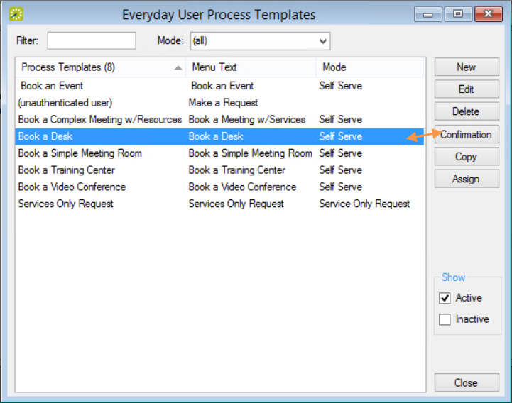
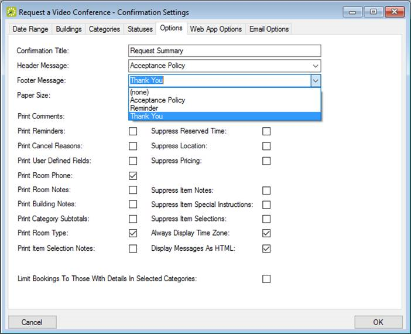
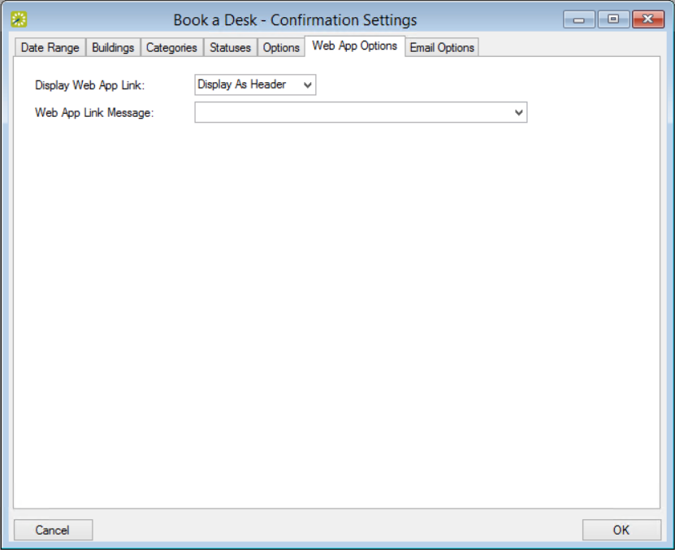

When working with Everyday User Process Templates, you can set automated confirmations that generate when Everyday Users initiate reservations or bookings with specific templates. For example, you might want Everyday Users to always receive an email to confirm that a request for a room has been received and will be processed.
Click Confirmation.

Everyday User Process Templates Window

Setting Email Header and Footer in the Options Tab

Specifying EMS Web App Link Settings in the Web App Options Tab
EMS Web App Link Settings Fields
| Option | Description |
|---|---|
| Display Web App Link | Indicate whether a URL to the Web App will display in the confirmation as a Header, Footer, or at all. |
| Web App Link Message | Indicate which Message, if any, to include with the URL to the EMS Web App in the confirmation. |
To understand how the Desktop Client user encounters these confirmations, see Confirmations.